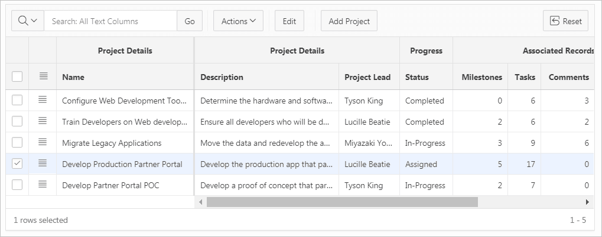
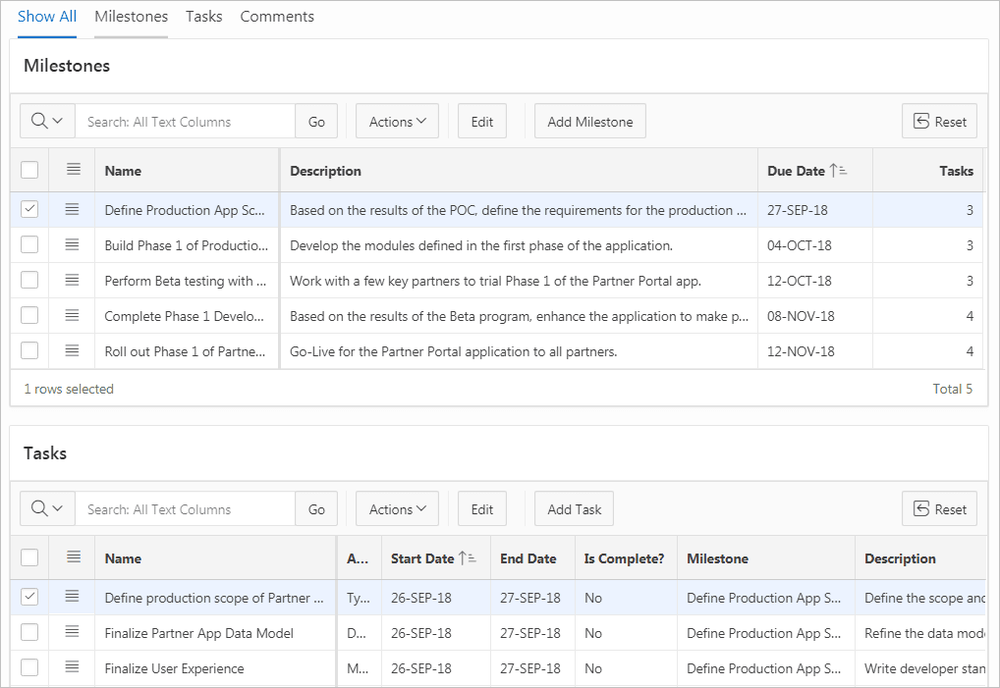

9.5 Creating Master Detail Forms
Developers can create a master detail form with either the Create Application Wizard or the Create Page Wizard.
- About Master Detail Forms
A master detail form enables users to query, insert, update, and delete values from two related tables or views. You choose the tables on which to build the master and detail regions. - Creating a Master Detail Form Using the Create Application Wizard
Run the Create Application Wizard to create a new application that contains a Stacked or Side by Side master detail forms. - Creating a Stacked Master Detail Using the Create Page Wizard
Use the Create Page Wizard to add a stacked master detail to an existing application. - Creating a Side by Side Master Detail Using the Create Page Wizard
Run the Create Page Wizard to add a new page with a Side by Side master detail. - Creating a Drill Down Master Detail Using the Create Page Wizard
Run the Create Page Wizard to add a new page with a Drill Down master detail.
Parent topic: Developing Forms
9.5.1 About Master Detail Forms
A master detail form enables users to query, insert, update, and delete values from two related tables or views. You choose the tables on which to build the master and detail regions.
A master detail form reflects a one-to-many relationship between tables in a database. Typically, a master detail form displays a master row and multiple detail rows. When you create a master detail form using the Create Page or Create Application Wizards, you choose the tables on which to build the master form and the detail form. App Builder supports three types of master detail form options: Stacked; Drill Down; and Side by Side. While the Create Page Wizard supports all master detail form options, the Create Application Wizard supports only Stacked and Side by Side.
Stacked Master Detail
A Stacked master detail form contains a single page with editable interactive grids based on two related tables or views. Users select a row in the master grid to update the detail grids. Developers can create a stacked master detail with either the Create Application Wizard or the Create Page Wizard.
The following example displays master detail interactive grids on the same page. The user has option of interacting with either the master or the detail without leaving the page.

Description of the illustration master_detail_single_1.png
The previous example shows the master interactive grid with the project, Develop Production Partner Portal selected. The next example shows detail interactive grids for Milestones and Tasks.

Description of the illustration master_detail_single_2.png
Drill Down Master Detail
A Drill Down master detail contains two pages based on two related tables or views. The first page contains an interactive report for the master table. The second page features a standard form for the master and interactive grids for the detail. Developers can create a Drill Down master detail with the Create Page Wizard.
In this example, users click the Edit icon to view project details. The second page includes both a standard form (for the master) and editable interactive grids.
For numeric and date fields, you can also pre-define date and number format masks,
or apply those format masks after generating the initial form. Wizard generated master
detail forms also automatically create validations for some columns. Validations are created
for columns that are set to NOT NULL in the underlying table and columns of
type NUMBER, DATE or TIMESTAMP. Note that
validations are not created for columns if the column is set to read-only, either based on
the user's selection, or defined UI Defaults.
Tip:
You can control the appearance of a specific column by editing column attributes.
Side by Side Master Detail
A Side by Side master detail form contains a single page master detail utilizing a side by side layout and report regions with modal edit windows. The left side contains a master list to navigate to the master record. The right side contains the selected master record and the associated detail report(s). Developers can create Side by Side master detail with either Create Application Wizard or Create Page Wizard.
The example that follows shows the Milestones detail interactive report. Users can Milestones by clicking an Edit icon.
Parent topic: Creating Master Detail Forms
9.5.2 Creating a Master Detail Form Using the Create Application Wizard
Run the Create Application Wizard to create a new application that contains a Stacked or Side by Side master detail forms.
Tip:
The Create Application Wizard uses general best practices to generate the application and does not include several advanced options included in the Create Page Wizard.
To create a master detail form using the Create Application Wizard:
See Also:
Parent topic: Creating Master Detail Forms
9.5.3 Creating a Stacked Master Detail Using the Create Page Wizard
Use the Create Page Wizard to add a stacked master detail to an existing application.
A Stacked master detail form contains a single page with editable interactive grids based on two related tables or views. Users select a row in the master grid to update the detail grids.
To create a Stacked master detail on a new page:
Tip:
To learn more about external data sources, see Managing REST Enabled SQL References and Managing REST Data Sources.Parent topic: Creating Master Detail Forms
9.5.4 Creating a Side by Side Master Detail Using the Create Page Wizard
Run the Create Page Wizard to add a new page with a Side by Side master detail.
A Side by Side master detail form contains a single page master detail utilizing a side by side layout and report regions with modal edit windows. The left side contains a master list to navigate to the master record. The right side contains the selected master record and the associated detail report(s).
To create a Side by Side master detail on a new page:
Tip:
To learn more about external data sources, see Managing REST Enabled SQL References and Managing REST Data Sources.Parent topic: Creating Master Detail Forms
9.5.5 Creating a Drill Down Master Detail Using the Create Page Wizard
Run the Create Page Wizard to add a new page with a Drill Down master detail.
A Drill Down master detail contains two pages based on two related tables or views. The first page contains an interactive report for the master table. The second page features a standard form for the master and interactive grids for the detail.
To create a two page Drill Down master detail on a new page:
Tip:
To learn more about external data sources, see Managing REST Enabled SQL References and Managing REST Data Sources.Parent topic: Creating Master Detail Forms